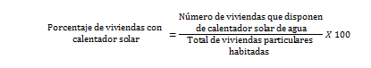

Total de viviendas particulares habitadas
Total de viviendas particulares que en la fecha de referencia de la Encuesta Intercensal 2015 tenían residentes habituales. Incluye cualquier recinto, local, refugio, instalación móvil o improvisada que haya estado habitada en el momento de la encuesta.
Porcentaje estatal de las viviendas particulares habitadas
Se refiere al número de viviendas particulares habitadas que tiene el distrito con respecto al total estatal, expresado por cada cien.
Promedio de ocupantes por vivienda
Es el número de ocupantes de las viviendas particulares habitadas entre el total de viviendas particulares habitadas en un mismo espacio geográfico.
Promedio de ocupantes por cuarto
Es el número de ocupantes de las viviendas particulares habitadas entre el total de cuartos en viviendas particulares habitadas en un mismo espacio geográfico.
Para el cálculo de este indicador se excluyen las viviendas particulares habitadas del tipo local, refugio, instalación móvil o improvisada.
Disponibilidad de servicios en la vivienda
- Porcentaje de viviendas con disponibilidad de agua entubada.
Es el número de viviendas particulares habitadas que cuentan con agua entubada dentro de la vivienda respecto al total de viviendas particulares habitadas, expresado por cada cien.
Para el cálculo de este indicador se excluyen las viviendas particulares habitadas del tipo local, refugio, instalación móvil o improvisada.
- Porcentaje de viviendas con disponibilidad de drenaje.
Es el número de viviendas particulares habitadas que cuentan con drenaje respecto al total de viviendas particulares habitadas, expresado por cada cien.
Para el cálculo de este indicador se excluyen las viviendas particulares habitadas del tipo local, refugio, instalación móvil o improvisada.
- Porcentaje de viviendas con disponibilidad de servicio sanitario.
Es el número de viviendas particulares habitadas que cuentan con servicio sanitario respecto al total de viviendas particulares habitadas, expresado por cada cien.
Para el cálculo de este indicador se excluyen las viviendas particulares habitadas del tipo local, refugio, instalación móvil o improvisada.
- Porcentaje de viviendas con disponibilidad de electricidad.
Es el número de viviendas particulares habitadas que cuentan con electricidad respecto al total de viviendas particulares habitadas, expresado por cada cien.

Para el cálculo de este indicador se excluyen las viviendas particulares habitadas del tipo local, refugio, instalación móvil o improvisada.
Tenencia de la vivienda
- Distribución de las viviendas particulares habitadas, según situación de tenencia
Es el número de viviendas de acuerdo a la situación de tenencia declarada por los ocupantes respecto al total de viviendas particulares habitadas, expresada por cada cien.

Donde “X” se refiere a algunas de las siguientes situaciones de tenencia de la vivienda:
- Propia
- Alquilada
- Familiar o prestada
- Otra situación
- No especificado
Para el cálculo de este indicador se excluyen las viviendas particulares habitadas del tipo local, refugio, instalación móvil o improvisada.
Viviendas con materiales de construcción precarios
- Porcentaje de viviendas con materiales de construcción precarios en paredes
Es el número de viviendas particulares habitadas que tienen paredes elaboradas predominantemente con materiales precarios respecto al total de viviendas particulares habitadas, expresado por cada cien.
Se consideran materiales precarios: material de desecho, lámina de cartón, de asbesto o metálica, carrizo, bambú o palma y embarro o bajareque.
Para el cálculo de este indicador se excluyen las viviendas particulares habitadas del tipo local, refugio, instalación móvil o improvisada.
- Porcentaje de viviendas con materiales de construcción precarios en techos
Es el número de viviendas particulares habitadas que tienen techos elaborados predominantemente con materiales precarios respecto al total de viviendas particulares habitadas, expresado por cada cien.

Se consideran materiales precarios: material de desecho y lámina de cartón.
Para el cálculo de este indicador se excluyen las viviendas particulares habitadas del tipo local, refugio, instalación móvil o improvisada.
- Porcentaje de viviendas con piso de tierra
Es el número de viviendas particulares habitadas que tienen piso de tierra respecto al total de viviendas particulares habitadas, expresado por cada cien.
Para el cálculo de este indicador se excluyen las viviendas particulares habitadas del tipo local, refugio, instalación móvil o improvisada.
Disponibilidad de Tecnologías de la Información y la Comunicación (TIC)
- Porcentaje de viviendas con disponibilidad de Internet
Es el número de viviendas particulares habitadas que cuentan con servicio de Internet respecto al total de viviendas particulares habitadas, expresado por cada cien.
Para el cálculo de este indicador se excluyen las viviendas particulares habitadas del tipo local, refugio, instalación móvil o improvisada.
- Porcentaje de viviendas con disponibilidad de televisión de paga
Es el número de viviendas particulares habitadas que cuentan con servicio de televisión de paga respecto al total de viviendas particulares habitadas, expresado por cada cien.
Para el cálculo de este indicador se excluyen las viviendas particulares habitadas del tipo local, refugio, instalación móvil o improvisada.
- Porcentaje de viviendas con disponibilidad de pantalla plana
Es el número de viviendas particulares habitadas que cuentan con pantalla plana con respecto al total de viviendas particulares habitadas, expresado por cada cien.
Para el cálculo de este indicador se excluyen las viviendas particulares habitadas del tipo local, refugio, instalación móvil o improvisada.
- Porcentaje de viviendas con disponibilidad de computadora
Es el número de viviendas particulares habitadas que cuentan con computadora respecto al total de viviendas particulares habitadas, expresado por cada cien.
Para el cálculo de este indicador se excluyen las viviendas particulares habitadas del tipo local, refugio, instalación móvil o improvisada.
- Porcentaje de viviendas con disponibilidad de teléfono celular
Es el número de viviendas particulares habitadas que cuentan con servicio de teléfono celular respecto al total de viviendas particulares habitadas, expresado por cada cien.
Para el cálculo de este indicador se excluyen las viviendas particulares habitadas del tipo local, refugio, instalación móvil o improvisada.
- Porcentaje de viviendas con disponibilidad de teléfono fijo
Es el número de viviendas particulares habitadas que cuentan con servicio de teléfono fijo respecto al total de viviendas particulares habitadas, expresado por cada cien.
Para el cálculo de este indicador se excluyen las viviendas particulares habitadas del tipo local, refugio, instalación móvil o improvisada.
Ahorro de energía y separación de residuos
- Porcentaje de viviendas con panel solar
Es el número de viviendas particulares habitadas que cuentan con panel solar respecto al total de viviendas particulares habitadas, expresado por cada cien.
Para el cálculo de este indicador se excluyen las viviendas particulares habitadas del tipo local, refugio, instalación móvil o improvisada.
- Porcentaje de viviendas con calentador solar
Es el número de viviendas particulares habitadas que cuentan con calentador solar de agua respecto al total de viviendas particulares habitadas expresado por cada cien.

Para el cálculo de este indicador se excluyen las viviendas particulares habitadas del tipo local, refugio, instalación móvil o improvisada.
- Porcentaje de viviendas con focos ahorradores
Es el número de viviendas particulares habitadas en las que la totalidad de los focos con que cuentan son focos ahorradores respecto al total de viviendas particulares habitadas, expresado por cada cien.
Para el cálculo de este indicador se excluyen las viviendas particulares habitadas del tipo local, refugio, instalación móvil o improvisada.
- Porcentaje de viviendas con separación de residuos
Es el número de viviendas particulares habitadas en las que se acostumbra separar los residuos (separación de basura en orgánica e inorgánica) respecto al total de viviendas particulares habitadas que declararon disponer de servicio de recolección de basura (se la dan a un camión o carrito de basura o la dejan en un contenedor o depósito), expresado por cada cien.
Para el cálculo de este indicador se excluyen las viviendas particulares habitadas del tipo local, refugio, instalación móvil o improvisada.
Fuente:
Nota: